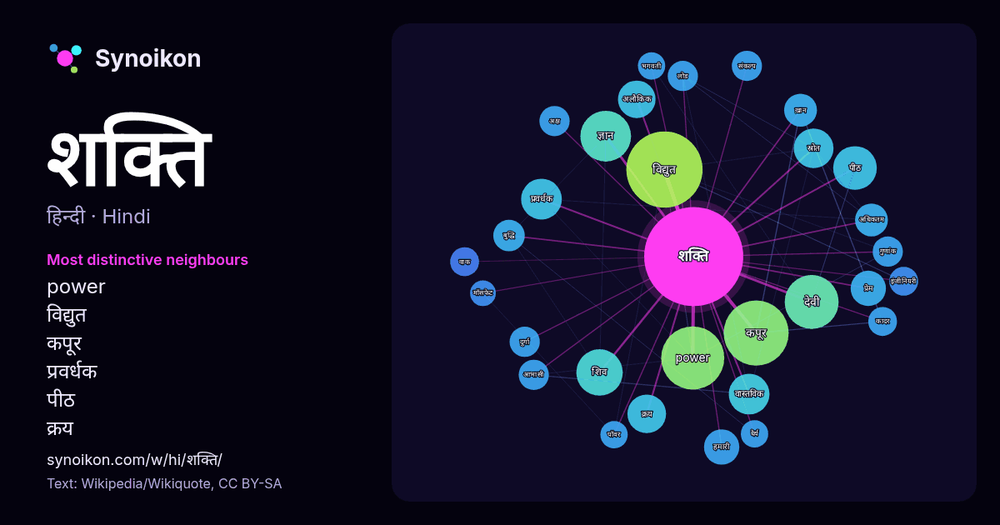

हिन्दी · लोकप्रिय शब्द
शक्ति
“power” · विकिपीडिया, Wikiquote के 1435 प्रयोगों में इसके आसपास मिले शब्द।

सबसे विशिष्ट पड़ोसी
- power 45×
- विद्युत 43×
- कपूर 40×
- प्रवर्धक 20×
- पीठ 19×
- क्रय 17×
- अलौकिक 16×
- देवी 15×
- शिव 14×
- ख़ान 12×
- हमारी 12×
- ज्ञान 11×
- गुणांक 11×
- आभासी 11×
- लोड 11×
- कादर 11×
- वाक 11×
- स्रोत 10×
- वास्तविक 10×
- अक्ष 10×
× = सामान्य विकिपीडिया टेक्स्ट की तुलना में कितने गुना अधिक।
सबसे अधिक आने वाले पड़ोसी
- विद्युत 70
- कपूर 51
- power 48
- देवी 35
- प्राप्त 35
- ज्ञान 31
- शिव 26
- सिंह 26
- भारत 25
- अधिक 24
- कारण 24
- पीठ 23
- भारतीय 22
- राज्य 21
- पास 20
- प्रवर्धक 20
- वास्तविक 20
- उपयोग 19
- प्रणाली 19
- स्रोत 19
संदर्भ में
- चित्र:Electric bulb ilament.jpg भौतिकी मे, शक्ति या विद्युत-शक्ति या पावर (प्रतीक: P), वह दर है जिस पर कोई कार्य किया जाता है या ऊर्जा संचारित होती है Wikipedia snippets · शक्ति (भौतिकी)
- का उपयोग करके विद्युत शक्ति का परिवर्तन एवं नियंत्रण से सम्बन्धित ज्ञान को शक्ति एलेक्ट्रॉनिकी (power electronics) कहते हैं। शक्ति एलेक्ट्रॉनिकी के कारण Wikipedia snippets · शक्ति एलेक्ट्रॉनिकी
- हैं। साधारण शब्दों में शक्ति संतुलन का अर्थ है जब एक राज्य/राज्यों का समूह दूसरे राज्य/राज्यों के समूह के सापेक्ष अपनी शक्ति इतनी बढ़ा ले कि वह उसके Wikipedia snippets · शक्ति-संतुलन
- देशों में एकसमान वस्तुओं की कीमत समान रहती है। क्रय शक्ति समता सिद्धांत की मुख्य विशेषताएँ क्रय शक्ति समता सिद्धान्त की मुख्य विशेषताएं निम्नलिखित हैं- Wikipedia snippets · क्रय-शक्ति समता
- विद्युत शक्ति पर काम कर रहे किसी भार (लोड) द्वारा लिये गये वास्तविक शक्ति (Real power) तथा आभासी शक्ति (Apparent power) के अनुपात को शक्ति गुणक या शक्ति गुणांक Wikipedia snippets · शक्ति गुणांक
- श्रम शक्ति एक्स्प्रेस 2451 भारतीय रेल द्वारा संचालित एक मेल एक्स्प्रेस ट्रेन है। यह ट्रेन कानपुर सेंट्रल रेलवे स्टेशन (स्टेशन कोड:CNB) से 11:35PM बजे Wikipedia snippets · श्रम शक्ति एक्स्प्रेस २४५१
- श्रम शक्ति एक्स्प्रेस 2452 भारतीय रेल द्वारा संचालित एक मेल एक्स्प्रेस ट्रेन है। यह ट्रेन नई दिल्ली रेलवे स्टेशन (स्टेशन कोड:NDLS) से 11:40PM बजे छूटती Wikipedia snippets · श्रम शक्ति एक्स्प्रेस २४५२
- वर्णित योगमाया यही शक्ति है जो व्यक्त और अव्यक्त रूप में हैं। कृष्ण 'योगमायामुवाश्रित:' होकर ही अपनी लीला करते हैं। राधा उनकी आह्वादिनी शक्ति है। शिव शक्तिहीन Wikipedia snippets · शक्ति (देवी)
और शब्द
- इतिहास
- ईश्वर
- कार्य
- कुत्ता
- गर्मी
- गाना
- घंटी
- घड़ी
- घोड़ा
- चाय
- चित्रकला
- छाया
- जंगल
- जलवायु
- जीवन
- तूफ़ान
- दर्पण
- द्वीप
- नक्षत्र
- नमक
- परिवार
- पहाड़
- पानी
- पैसा
- प्रकृति
- बगीचा
- बिल्ली
- भाषा
- भोजन
- माता
- मानचित्र
- मृत्यु
- मौन
- रेगिस्तान
- रेलगाड़ी
- रोटी
- वर्षा
- विज्ञान
- शरद
- शहद
- शहर
- सड़क
- सत्य
- समय
- सर्दी
- सेतु
- स्वर्ण
- स्वास्थ्य
- हृदय
2026-10-09 को डिफ़ॉल्ट सेटिंग्स (±5 शब्द, मध्यम कॉर्पस) के साथ पहले से गणना की गई। इंटरैक्टिव मानचित्र इसे लाइव डेटा से ताज़ा कर सकता है।
मशीन-अनूदित इंटरफ़ेस; सुधारों का स्वागत है।